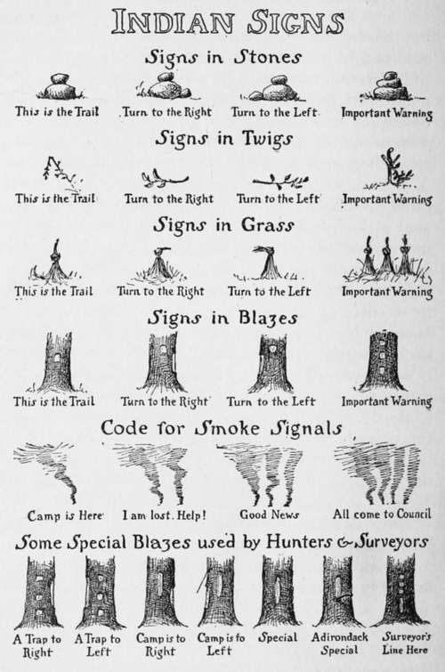

Blazes And Indian Signs. Blazes
Description
This section is from the book "The Book Of Woodcraft", by Ernest Thompson Seton. Also available from Amazon: The Book of Woodcraft.
Blazes And Indian Signs. Blazes
First among the trail signs that are used by Scouts, Indians, and white hunters, and most likely to be of use to the traveler, are axe blazes on tree trunks. Among these some may vary greatly with locality, but there is one that I have found everywhere in use with scarcely any variation. That is the simple white spot meaning, "Here is the trail"
The Indian in making it may nick off an infinitesimal speck of bark with his knife, the trapper with his hatchet may make it as big as a dollar, or the settler with his heavy axe may slab off half the tree-side; but the sign is the same in principle and in meaning, on trunk, log or branch from Atlantic to Pacific and from Hudson Strait to Rio Grande. "This is your trail," it clearly says in the universal language of the woods.
There are two ways of employing it: one when it appears on back and front of the trunk, so that the trail can be run both ways; the other when it appears on but one side of each tree, making a blind trail, which can be run one way only, the blind trail is often used by trappers and prospectors, who do not wish any one to follow their back track.
But there are treeless regions where the trail must be marked; regions of sage brush and sand, regions of rock, stretches of stone, and level wastes of grass or sedge. Here other methods must be employed.
A well-known Indian device, in the brush, is to break a twig and leave it hanging. (Second line).
Among stones and rocks the recognized sign is one stone set on top of another (top line) and in places where there is nothing but grass the custom is to twist a tussock into a knot (third line).
These signs also are used in the whole country from Maine to California.
In running a trail one naturally looks straight ahead for the next sign; if the trail turned abruptly without notice one might easily be set wrong, but custom has provided against this. The tree blaze for turn "to the right" is shown in Number 2, fourth row; "to the left" in Number 3. The greater length of the turning blaze seems to be due to a desire for emphasis as the same mark set square on, is understood to mean "Look out, there is something of special importance here." Combined with a long side chip it means "very important; here turn aside." This is often used to mean "camp is close by," and a third sign that is variously combined but always with the general meaning of "warning" or "something of great importance" is a threefold blaze. (No. 4 on fourth line.) The combination (No. 1 on bottom row) would read "Look out now for something of great importance to the right." This blaze I have often seen used by trappers to mark the whereabouts of their trap or cache.
Surveyors often use a similar mark - that is, three simple spots and a stripe to mean, "There is a stake close at hand," while a similar blaze on another tree near by means that the stake is on a line between.
Stone Signs
These signs done into stone-talk would be as in the top line of the cut.
These are much used in the Rockies where the trail goes over stony places or along stretches of slide-rock.
Grass And Twig Signs
In grass or sedge the top of the tuft is made to show the direction to be followed; if it is a point of great importance three tufts are tied, their tops straight if the trail goes straight on; otherwise the tops are turned in the direction toward which the course turns.
The Ojibways and other woodland tribes use twigs for a great many of these signs. (See second row.) The hanging broken twig like the simple blaze means "This is the trail." The twig clean broken off and laid on the ground across the line of march means, "Here break from your straight course and go in the line of the butt end," and when an especial warning is meant, the butt is pointed toward the one following the trail and raised somewhat, in a forked twig. If the butt of the twig were raised and pointing to the left, it would mean "Look out, camp, or ourselves, or the enemy, or the game we have killed is out that way." With some, the elevation of the butt is made to show the distance of the object; if low the object is near, if raised very high the object is a long way off.
These are the principal signs of the trail used by Scouts, Indians, and hunters in most parts of America. These are the standards - the ones sure to be seen by those who camp in the wilderness.
Smoke Signals
There is in addition a useful kind of sign that has been mentioned already in these papers - that is, the Smoke Signal. These were used chiefly by the Plains Indians, but the Ojibways seem to have employed them at times.
A clear hot fire was made, then covered with green stuff or rotten wood so that it sent up a solid column of black smoke. By spreading and lifting a blanket over this smudge the column could be cut up into pieces long or short, and by a preconcerted code these could be made to convey tidings.
But the simplest of all smoke codes and the one of chief use to the Western traveler is this:
One steady smoke - "Here is camp".
Two steady smokes - "I am lost, come and help me".
I find two other smoke signals, namely: Three smokes in a row - "Good news." Four smokes in a row - "All are summoned to council".
These latter I find not of general use, nor are they so likely to be of service as the first two given.
Signal By Shots
The old buffalo hunters had an established signal that is yet used by the mountain guides. It is as follows:
Two shots in rapid succession, an interval of five seconds by the watch, then one shot; this means, "where are you? " The answer given at once and exactly the same means "Here I am; what do you want?" The reply to this may be one shot, which means, "All right; I only wanted to know where you were." But if the reply repeats the first it means, "I am in serious trouble; come as fast as you can".
Continue to:
- prev: Why Should You Talk The Sign Language?. Continued
- Table of Contents
- next: Blazes And Indian Signs. Blazes. Continued
Tags
bookdome.com, books, online, free, old, antique, new, read, browse, download